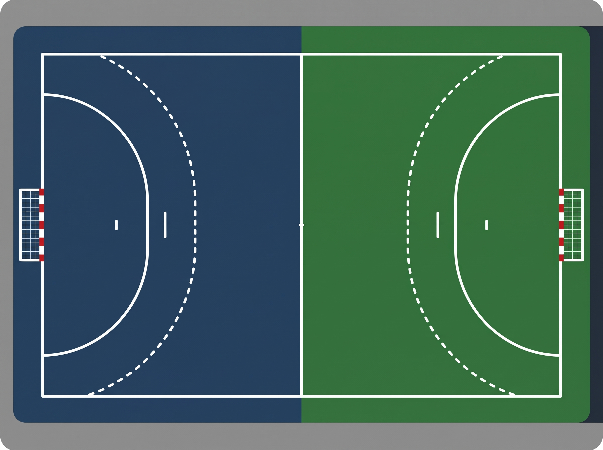

00:00
▶ スタート
⏸ 停止
リセット
自チーム
相手チーム
前半
後半
出場中の自チームGK:
背番号:
未選択
1
2
3
4
5
6
7
8
9
0
C (消去)

★
得点
GKセーブ
枠外/ミス
7mスロー
アシスト
ﾀｰﾝｵｰﾊﾞｰ
ﾊﾟｽｶｯﾄ
警告(W)
2分退場(S)
失格(D)
直近の記録
↩️ 1つ戻る
まだ記録がありません
📥 公式記録用 CSVデータを出力
📄 ランニングスコアをPDF出力
戻る
↓ PDFを保存・共有
公式ランニングスコア
【 前 半 】
自チーム
時間
相手チーム
番
結
点
点
結
番
【 後 半 】
自チーム
時間
相手チーム
番
結
点
点
結
番
シュート詳細を記録
6m
9m
サイド
速攻
左上
中上
右上
左中
中央
右中
左下
中下
右下
キャンセル